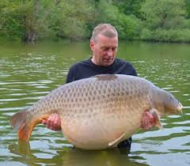
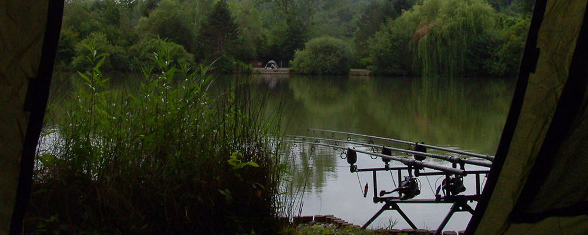

Despre Pescuit
Pescuitul este una dintre cele mai vechi activități umane, devenind în timp atât un mijloc de trai, cât și un hobby relaxant.
Fie că alegi pescuitul sportiv sau tradițional, ai nevoie de răbdare, cunoștințe și echipament adecvat.
Tehnici de Pescuit
- Pescuit la plută – potrivit pentru lacuri și râuri.
- Pescuit la crap – necesită echipament special și momeală adecvată.
- Pescuit la spinning – ideal pentru capturarea peștilor răpitori.
Echipament Recomandat
Un pescar bine pregătit trebuie să aibă:
- Lansetă și mulinetă adecvată tipului de pescuit practicat.
- Momeală naturală sau artificială.
- Fir rezistent și accesorii de pescuit (cârlige, plumbi, plută etc.).
Galerie Foto



Contact
Pentru întrebări sau colaborări, ne poți scrie la:
Nume Popa Laurentiu Darian
Email: laurentiudarianpopa@gmail.com
Telefon: 0770 810 398